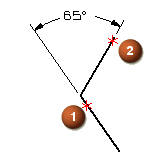
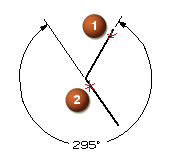

角度标注的技巧
尺寸延长线方向由选择对象的方式以及在哪里拖动尺寸原点来控制，因此，根据您如何选择对象以及放置尺寸的位置，您将会获得不同的结果。
如果您想要两条直线间的小角度尺寸，应该在两直线相反的端点，或者相邻的端点附近选择它们，选择的顺序不重要。

如果您想要下图显示的这个小角度，应该在直线端点  和
和  附近以任意顺序选择直线。
附近以任意顺序选择直线。

内错角
如果您得到了一个您不想要的角度，通过点击内错角就可以轻松纠正它。
如果您想要如下显示的大角，应该先在相反的直线端点附近选择直线，然后在角度尺寸对话框条中点击内错角，并将尺寸拖动放置到交点左侧。

如果您想要这个大角，应该在直线端点  和
和  附近选择直线，然后点击内错角，并将尺寸拖动放置到交点下方。
附近选择直线，然后点击内错角，并将尺寸拖动放置到交点下方。
